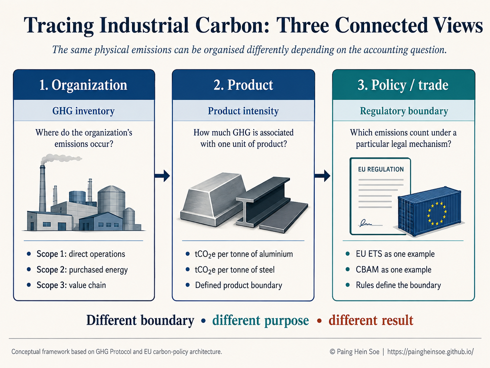
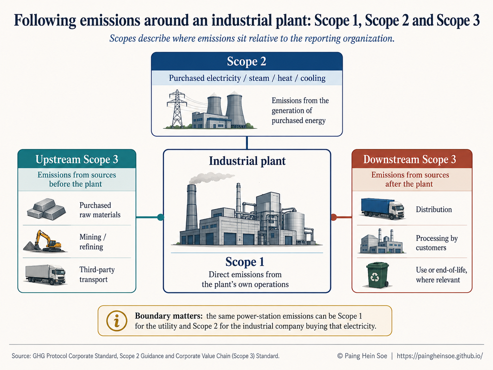
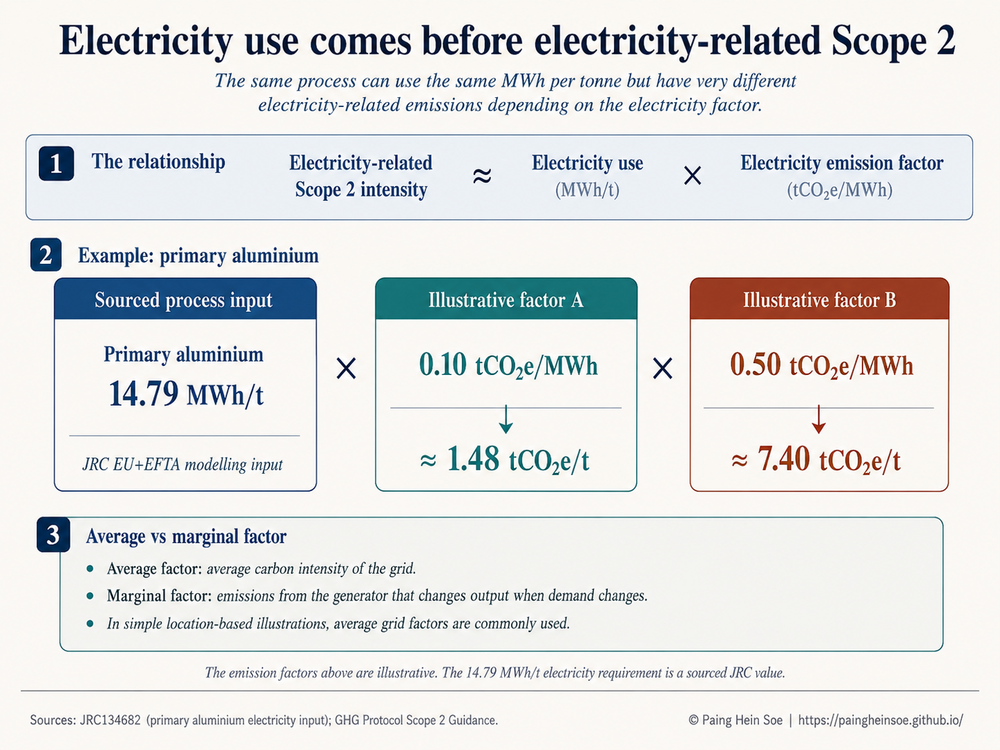
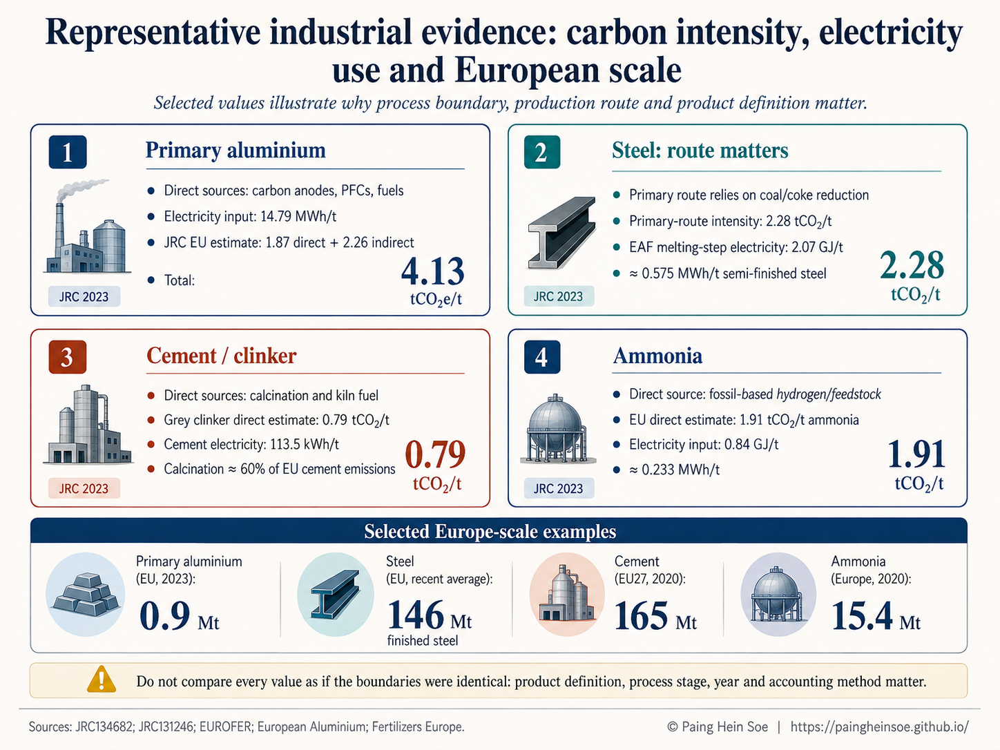

Tracing Industrial Carbon: From GHG Scopes to Product-Level Emissions
What aluminium, steel, cement and ammonia reveal about direct emissions, electricity use and industrial carbon accounting
Industrial carbon is often reduced to a single number, such as tonnes of CO\(_2\) per tonne of steel, aluminium or cement. That number is useful, but it can hide an equally important question: where did those emissions actually occur?
Some emissions are released directly inside the plant. Others arise from the electricity used to run the process. Still others occur upstream or downstream in the value chain.
When I started comparing industrial products more closely, I found that Scope 1, Scope 2 and Scope 3 became much easier to understand once I followed the physical production process instead of starting with the accounting definitions alone.
A primary aluminium smelter, a conventional steelworks, a cement kiln and an ammonia plant can all be carbon-intensive, but for different reasons. This article follows those differences from the organization to the product, and then to the wider industrial and policy context.
- what Scope 1, Scope 2 and Scope 3 actually describe;
- how organizational emissions become product-level intensities such as tCO\(_2\)e/t;
- why electricity use should be understood before interpreting Scope 2;
- how aluminium, steel, cement and ammonia differ physically;
- why both emissions intensity and production scale matter; and
- why corporate, product and regulatory carbon boundaries are related but not identical.
I use Figure 1 as the map for the article. Read it from left to right: organization, product, then policy or trade.

First locate emissions around the reporting organization. Then translate the relevant emissions into a product-level intensity.
1. The bigger picture: three accounting views
Before comparing industrial products, I find it useful to separate three questions.
| View | Main question | Typical output |
|---|---|---|
| Organization | Where do the reporting organization’s emissions occur? | Scope 1, Scope 2, Scope 3 |
| Product | How much GHG is associated with one unit of product? | tCO\(_2\)e/t product |
| Policy / trade | Which emissions count under a particular legal mechanism? | Regulatory emissions measure |
These views are connected, but they are not interchangeable. A corporate GHG inventory organizes emissions around the reporting organization. A product calculation uses a defined product boundary. A regulatory system can define another boundary for its own legal purpose.
That distinction becomes easier to see once we follow emissions around an industrial plant.
2. What Scope 1, Scope 2 and Scope 3 actually tell us
The GHG Protocol Corporate Standard organizes a reporting organization’s emissions into three scopes (Greenhouse Gas Protocol 2004).
One rule is especially useful:
Scopes depend on whose inventory we are looking at.
If an aluminium smelter buys electricity from the grid, the CO\(_2\) is physically released at the power station. Those emissions can be Scope 1 for the utility operating the power station and Scope 2 for the aluminium company purchasing the electricity.
Figure 2 shows the three scopes around one industrial plant.

For the rest of this article, I keep Scope 3 brief and concentrate mainly on Scope 1, electricity use and Scope 2, because those differences are particularly useful for understanding industrial processes.
3. Moving from the organization to the product
Scope 1, Scope 2 and Scope 3 are organizational accounting categories. Industrial analysis often needs another step: relating emissions to the quantity of material produced.
For example, we might report:
\[ \mathrm{tCO_2e/t\ primary\ aluminium} \]
or:
\[ \mathrm{tCO_2e/t\ steel}. \]
The GHG Protocol distinguishes corporate value-chain accounting from product-level life-cycle accounting (Greenhouse Gas Protocol 2011b). So when I see an industrial carbon-intensity number, I first check four things:
Without that context, two numbers that look comparable may describe different systems.
4. Electricity first: why MWh per tonne matters
Before calculating electricity-related emissions, it helps to ask a physical engineering question:
How much electricity does producing one tonne actually require?
For a simple location-based illustration:
\[ \text{Electricity-related Scope 2 intensity} \approx \text{Electricity use} \times \text{electricity emission factor} \]
or, in units:
\[ \frac{\mathrm{tCO_2e}}{\mathrm{t\ product}} \approx \frac{\mathrm{MWh}}{\mathrm{t\ product}} \times \frac{\mathrm{tCO_2e}}{\mathrm{MWh}}. \]
The GHG Protocol location-based method uses grid-average emissions information for a defined geographic area. Its market-based method instead reflects qualifying contractual instruments and supplier-specific information where available (Greenhouse Gas Protocol 2015).
A primary aluminium example
The European Commission Joint Research Centre (JRC) used approximately 14.79 MWh of electricity per tonne of primary aluminium in its EU+EFTA modelling assumptions (Vidovic et al. 2023).
Keep the physical electricity requirement fixed and change only the illustrative electricity factor:
\[ 14.79\times0.10 \approx 1.48\ \mathrm{tCO_2e/t} \]
\[ 14.79\times0.50 \approx 7.40\ \mathrm{tCO_2e/t}. \]
The process still uses 14.79 MWh/t. What changes is the carbon intensity assigned to the electricity supplying that demand. The two emission factors above are separate scenarios, not values that are multiplied together.
Figure 3 shows the two alternatives visually.

An average grid emission factor represents the average carbon intensity of electricity supplied across a defined grid or geographic area. That is the type of factor aligned with the location-based Scope 2 inventory method (Greenhouse Gas Protocol 2015).
A marginal emission factor answers a different question: which generating unit changes output when electricity demand changes, and what emissions change with it?
| Factor | Question it answers |
|---|---|
| Average | What is the average carbon intensity of the electricity system? |
| Marginal | What generation changes when electricity demand changes? |
For this introductory article, the average-factor concept is the relevant starting point for ordinary Scope 2 inventory accounting.
The main message is therefore straightforward:
Electricity intensity tells us how much electricity a process requires. The electricity emission factor determines the emissions associated with supplying that electricity.
With the accounting framework in place, we can now compare how four industrial production systems create and use carbon differently.
5. Four industrial systems, four different emissions profiles
Figure 4 puts the four examples together using source-specific values.

6. A compact comparison
The table below is deliberately compact. It is a reference summary, not a ranking of industries.
| Product / route | Representative emissions data | Electricity requirement | Reference boundary |
|---|---|---|---|
| Primary aluminium | 4.13 tCO\(_2\)e/t total in JRC EU modelling: 1.87 direct + 2.26 indirect (Vidovic et al. 2023) | 14.79 MWh/t (Vidovic et al. 2023) | JRC 2019 modelling boundary |
| Primary steel route | 2.28 tCO\(_2\)/t (Vidovic et al. 2023) | Route-dependent | Worldsteel-aligned JRC comparison |
| EAF steel, melting step | Route and metallic-input dependent | ~0.575 MWh/t semi-finished steel (Vidovic et al. 2023) | EAF melting subprocess |
| Grey clinker / cement | Grey clinker direct: ~0.79 tCO\(_2\)/t clinker (Vidovic et al. 2023) | Cement: ~0.1135 MWh/t (Marmier 2023) | Clinker and cement use different boundaries |
| Ammonia | EU direct: ~1.91 tCO\(_2\)/t ammonia (Vidovic et al. 2023) | ~0.233 MWh/t (Vidovic et al. 2023) | JRC EU process data |
7. From one tonne to European scale
Per-tonne intensity is only half of the picture. The wider significance of a sector also depends on how much material is produced.
| Product | Selected Europe-scale quantity | Geography / year | Source |
|---|---|---|---|
| Primary aluminium | 0.9 Mt | EU, 2023 | (European Aluminium 2025) |
| Finished steel | ~146 Mt/year | EU, recent average | (European Steel Association (EUROFER) 2026) |
| Cement | 165 Mt | EU27, 2020 | (Marmier 2023) |
| Ammonia | 15.4 Mt | Europe, 2020 | (Fertilizers Europe 2023) |
These values provide scale, but they are not a harmonized same-year dataset. I therefore use them as context rather than as a direct statistical ranking.
Scaling electricity from one tonne to annual production
A transparent first-order estimate is:
\[ \text{Annual electricity requirement} \approx \text{annual production} \times \text{electricity intensity}. \]
For example, combining 0.9 Mt of EU primary aluminium production with the representative JRC intensity of 14.79 MWh/t gives:
\[ 0.9\ \mathrm{Mt}\times14.79\ \mathrm{MWh/t} \approx 13.3\ \mathrm{TWh}. \]
This is an order-of-magnitude scaling example, not an official EU electricity-consumption inventory. The production quantity and electricity-intensity parameter come from different sources and years (European Aluminium 2025; Vidovic et al. 2023).
8. Organization, product and policy: connected, not identical
We can now return to the three views from the beginning.
The EU Emissions Trading System and the Carbon Border Adjustment Mechanism are examples of policy systems with legally defined emissions boundaries (European Commission 2026). Those boundaries can overlap with corporate or product accounting, but they are designed for a different purpose.
Not every carbon number is trying to answer the same question.
9. Closing perspective
Scope 1, Scope 2 and Scope 3 become easier to understand when they are connected to the physical production process.
For primary aluminium, electricity demand is a major part of the production system. For conventional steelmaking, carbon-based reduction is central. For cement, process chemistry itself releases substantial CO\(_2\). For conventional ammonia, the hydrogen-production feedstock is critical.
The scopes organize emissions from the perspective of a reporting organization. Product-level intensities connect those emissions to a tonne of material. Production volumes then show why per-tonne emissions are only one part of the industrial picture. Regulation can add yet another accounting boundary for its own purpose.
Before comparing industrial carbon numbers, I ask:
- What exactly is being measured?
- Whose boundary is being used?
- Per tonne of what product?
- Under which production route and accounting method?
Those questions often matter just as much as the number itself.
Sources and further reading
A personal note
I prepared this article as part of my own effort to connect carbon-accounting terminology with the physical energy and industrial processes behind the numbers.
Scope 1, Scope 2 and Scope 3 can look like simple labels when we first encounter them. I find them much more useful when I ask what is physically happening inside the plant, where its electricity comes from, what sits outside the company boundary, and what changes when we move from a company inventory to a product or regulatory calculation.
Thanks for reading. I hope this gives you a clearer framework for interpreting industrial carbon numbers when you encounter them in company reports, technical studies or climate-policy discussions.